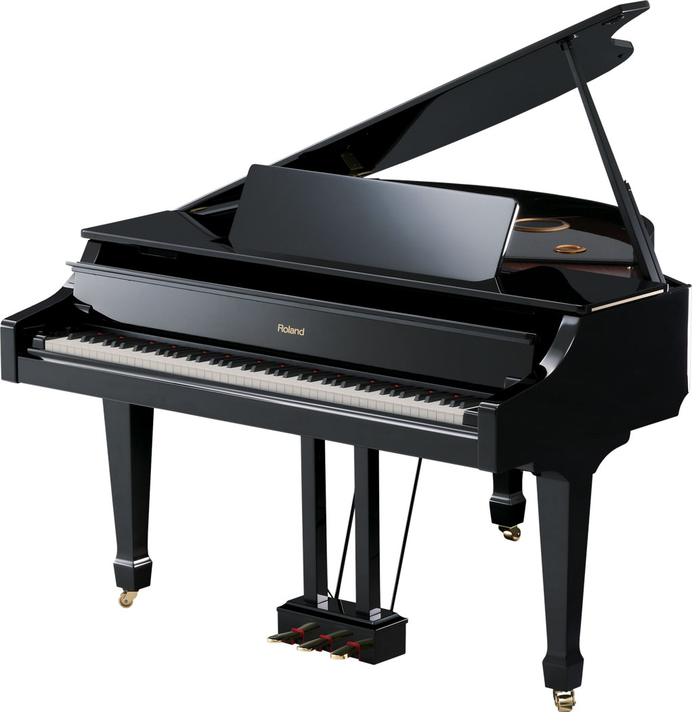

Piano, also called pianoforte, French piano or pianoforte, German Klavier, a keyboard musical instrument having wire strings that sound when struck by felt-covered hammers operated from a keyboard. The standard modern piano contains 88 keys and has a compass of seven full octaves plus a few keys.
The vibration of the strings is transmitted to a soundboard by means of a bridge over which the strings are stretched; the soundboard amplifies the sound and affects its tone quality. The hammers that strike the strings are affixed to a mechanism resting on the far ends of the keys; hammer and mechanism compose the “action.” The function of the mechanism is to accelerate the motion of the hammer, catch it as it rebounds from the strings, and hold it in position for the next attack. Modern hammers are covered with felt; earlier, leather was used. The modern piano has a cast-iron frame capable of withstanding the tremendous tension of the strings; early pianos had wood frames and thus could only be lightly strung. Modern pianos are therefore much louder than were those of the 18th century, an increase in loudness necessitated in part by the size of 19th-century concert halls. Of the three pedals found on most pianos, the damper pedal on the right lifts all the felt dampers above the strings, allowing them all to vibrate freely; the left pedal shifts the keyboard and action sideways to enable the hammer to strike only one of the two or three unison strings of each tenor and treble key (the bass notes are only single-strung); and the middle pedal (generally available on grand pianos but also found on some upright pianos) usually holds up the dampers only of those keys depressed when the pedal is depressed.
